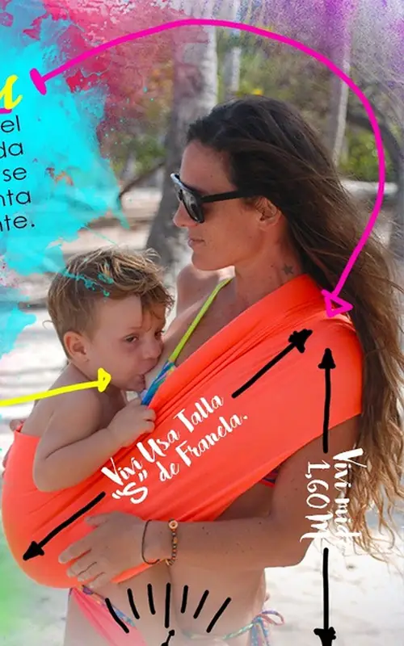
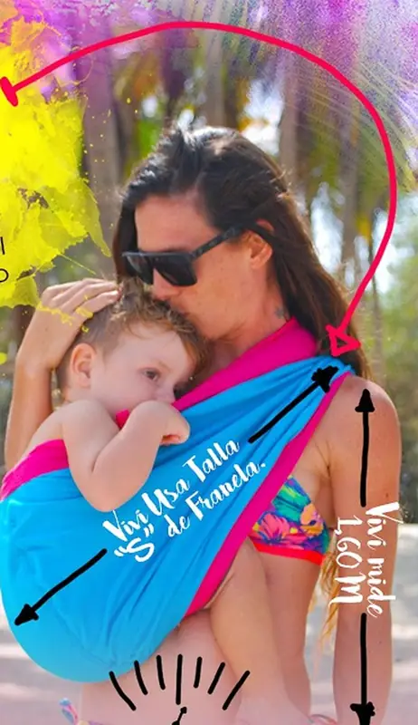
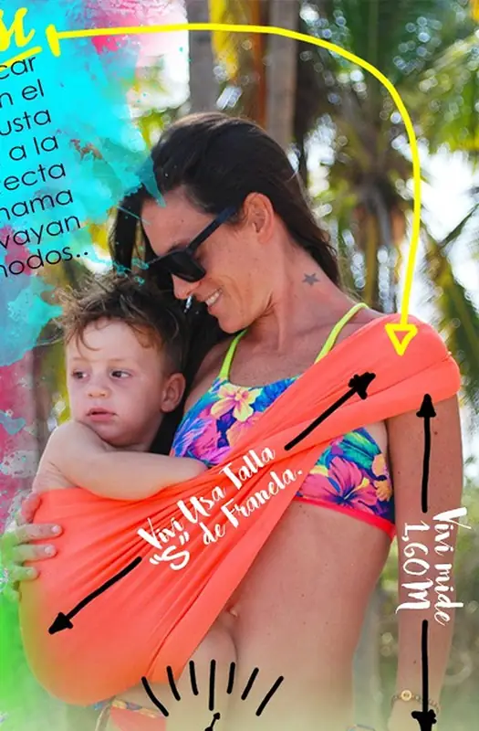

Elija su talla
La Hoku Hamaquita viene por talla. La talla la determinan el peso y la estatura de quien la va a usar, o la medida cruzada del hombro a la cadera.

Cómo medirse
- Tome una cinta métrica.
- Mida en cruz: desde el hombro hasta la cadera contraria.
- Compare con su talla de franela: la mayoría de las veces coincide.
Si está embarazada o dio a luz hace poco, una buena opción es tomar la medida sobre su espalda, con ayuda de alguien: del hombro a la cadera contraria.
Su medida
cm
Preguntar mi tallaLe confirmamos la talla por WhatsApp. El cuadro de medidas de cada talla: por confirmar.
Un ejemplo real
Vivi mide 1,60 m, pesa 52 kg y usa talla S de franela. Así le quedan dos tallas:


¿Pedí la talla equivocada?
Con el bebé adentro, su pompis debería quedar entre el ombligo y la cadera de usted. Para un buen ajuste, justo encima del hueso de la cadera.
Si queda varios centímetros por debajo del hueso de la cadera, necesita una talla más pequeña.
Si queda varios centímetros por encima del hueso de la cadera y la nota muy tensa, necesita la talla siguiente, más grande.
Pruebe con la que usted y su bebé estén más cómodos. Si la prefiere ajustada, la más pequeña; si la prefiere holgada, la siguiente.
Para que quede más ajustada y su bebé más cerca, puede bajar la tela del hombro o hacerle un doblez. Una misma talla abarca varias medidas, por eso a veces le sirven dos tallas, como pasa con las franelas.
Escribir por la talla